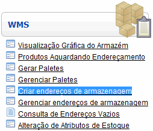
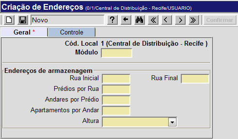
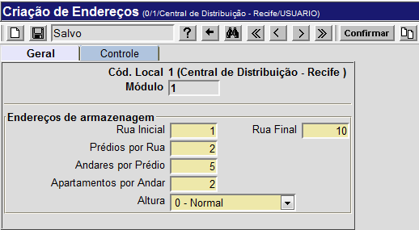
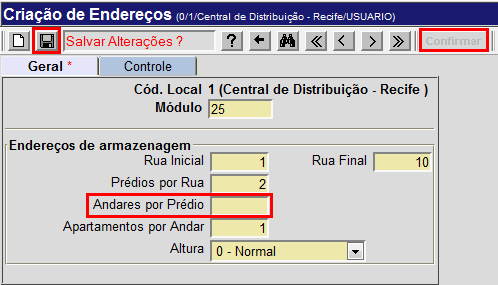
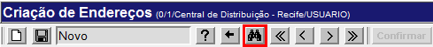

Criar Endereços de Armazenagem [ Voltar ]Utilize este formulário para cadastrar e editar endereços de armazenagem no Sistema. Para acessar o formulário, vá ao menu "WMS" na página inicial e clique em "Criar Endereços de Armazenagem". 
O sistema vai abrir a seguinte tela: 
Após aberta a tela, você precisará definir:
Preencha cada campo de acordo com sua necessidade. Após preencher todos os campos e clicar no botão Se o módulo preenchido já existir, o sistema irá abri-lo logo assim que o seu código for inserido no campo adequado: 
Obs: todos os campos são de preenchimento obrigatório! Se algum deles não tiver sido preenchido, o registro não poderá ser salvo, o botão  Caso queira editar um endereço existente: para localizar o endereço que deseja editar, clique no botão  Na tela de pesquisa do formulário "Criar Endereços de Armazenagem" é exibido o filtro "Módulos" para fácil localização do endereço desejado. Configure os filtros da pesquisa para que o sistema retorne automaticamente todos os registros correspondentes. Para mais informações sobre outros recursos e funcionalidades da pesquisa, favor ver o manual Introdução ao Sistema.
|
 (Salvar), clique no botão
(Salvar), clique no botão  para que o endereço seja criado.
para que o endereço seja criado.